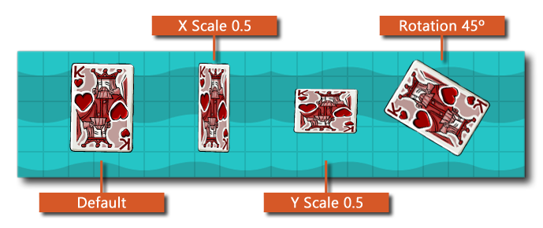
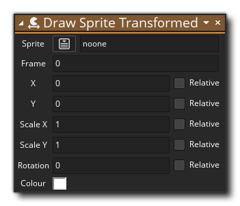

La description
Cette fonction va dessiner le sprite donné similaire à l'action Draw Sprite mais avec des options supplémentaires pour changer l'échelle, le mélange, la rotation et le cadre de l'image-objet en cours de dessin. La modification de ces valeurs ne modifie pas la ressource de quelque manière que (seulement comment elle est), et vous pouvez utiliser l' une des disponibles variables de propriété sprite au lieu de valeurs directes pour tous les arguments de la fonction. L'image ci-dessous illustre comment différentes valeurs affectent le dessin de l'image-objet: 
REMARQUE: la fusion de couleurs est recommandée uniquement pour la cible HTML5 lorsque WebGL est activé, bien que vous puissiez toujours définir la couleur de fusion si elle n'est pas activée et qu'elle fusionnera l'image-objet comme d'habitude. Cependant, tout mélange de cette manière crée un sprite en double qui est ensuite stocké dans le cache et utilisé si nécessaire. Ceci est loin d'être optimal et si vous utilisez plusieurs changements de couleur, cela ralentira les performances de vos jeux à moins que vous n'activiez WebGL. Si vous ne souhaitez pas utiliser WebGL, vous pouvez définir la taille du cache de la police pour essayer de la limiter si cela s'avère nécessaire sprite_set_cache_size.REMARQUE: cette action est uniquement destinée à être utilisée dans les divers événements de dessin et ne dessinera rien si elle est utilisée ailleurs.
Syntaxe de l'action:
Arguments:
Argument La description Sprite Le sprite à dessiner Frame Le cadre de l'image-objet à dessiner (utilisez la variable intégrée image_index pour le cadre actuel) X La position x pour dessiner à l'intérieur de la pièce Y La position y pour dessiner à l'intérieur de la pièce Scale X Le facteur d'échelle pour l'axe X (utilisez la variable intégrée image_xscale pour l'échelle X actuelle) Scale Y Le facteur d'échelle pour l'axe Y (utilisez la variable intégrée image_yscale pour l'échelle Y actuelle) Rotation L'angle de tirage pour le sprite (de 0 à 360, en tournant dans le sens antihoraire où 0 est à droite) utilise la variable intégrée image_angle pour la rotation actuelle) Colour La couleur à fusionner avec l'image-objet (par défaut, elle est blanche et vous pouvez utiliser la variable intégrée image_blend pour la couleur actuelle)
Exemple:
Le code de bloc d'action ci-dessus vérifie une variable et si elle est définie sur true puis le sprite est dessiné avec une mise à l'échelle aléatoire le long des axes x et y et mélangé avec la couleur rouge, sinon le sprite est dessiné en utilisant les transformations par défaut.